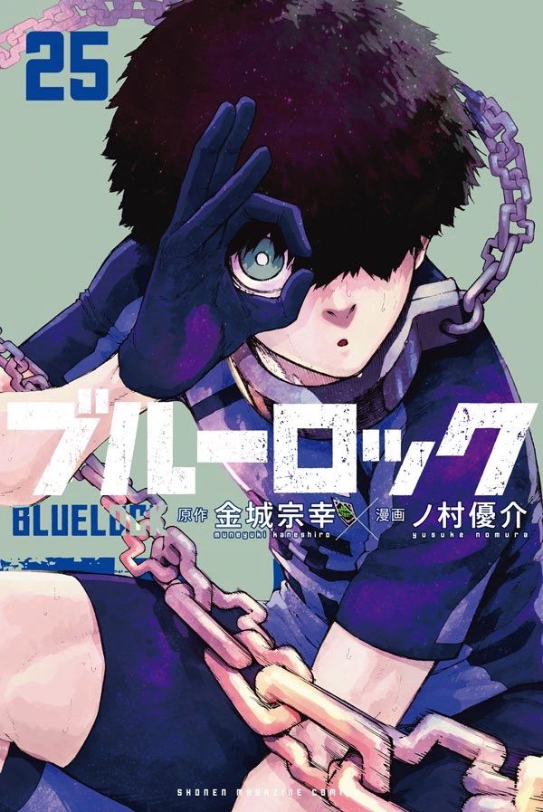
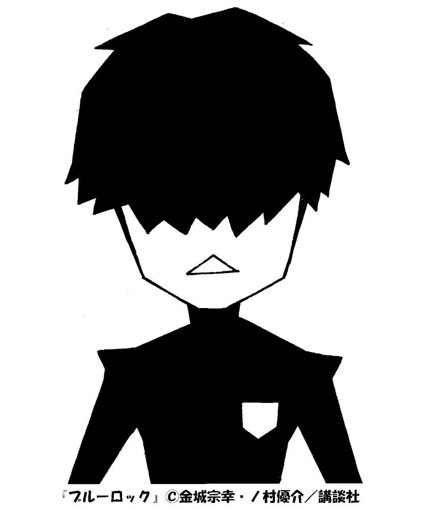
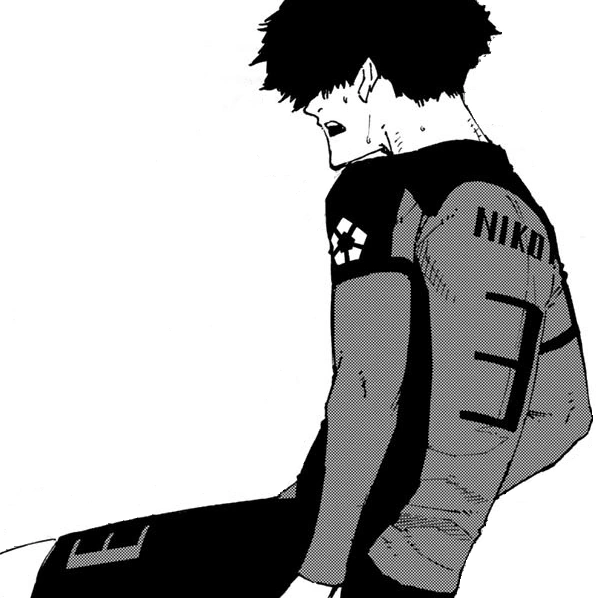
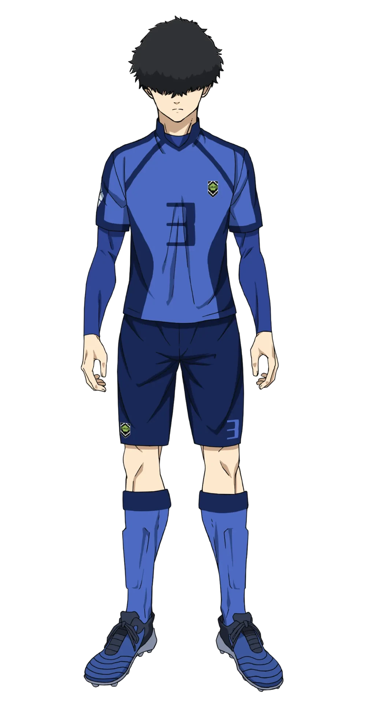

Japanese: 二子 一揮
Rōmaji: Niko Ikki
Alias(es): "The Watchtower"
Age: 16
Birthday: February 5
Height: 173cm / 5"8
Hair color: Black
Eye color: Teal
Team: Ubers (Italy)
Jersey Numbers: 3 (Japan U-20) / 25 (Ubers)
Position(s): Central Attacking Midfielder / Central Defensive Midfielder / Centre Back
Niko has a lean body with short, slightly spiky black hair that covers both his eyes. Niko is of average build and size, so he does not appear to be a strong player. His hair covers his eyes, but he is still able to see through them enough to play high-level football.
Off the field, Niko is very reserved due to his introverted nature and otaku upbringing. He seldom talks to others, preferring to stay within his own bubble, and tends to do things by himself. When he does talk, however, he speaks with relative respect to others and handles himself accordingly.
When in a match, although he talks to his teammates and peers with respect, he is quite snarky to his opponents, usually tossing out various subtly mean-spirited or sarcastic comments when faced up against someone. He's incredibly confident in his brain and ability to read the field, pointing out that him and Isagi were the same upon their first match, and even going further and saying that he was superior to Isagi in that same sense.
However, Niko has also shown that he is willing to adapt his mindset and playing style if it means evolving further. After losing to Isagi, he began focusing on his own goals and staying in the spotlight. During the U-20 match, he also grew to enjoy playing as a defender, where he used his eyes to crush the forwards on the U-20 team. This demonstrates Niko's willingness to change both his style and his role for the sake of his ego, without issue.